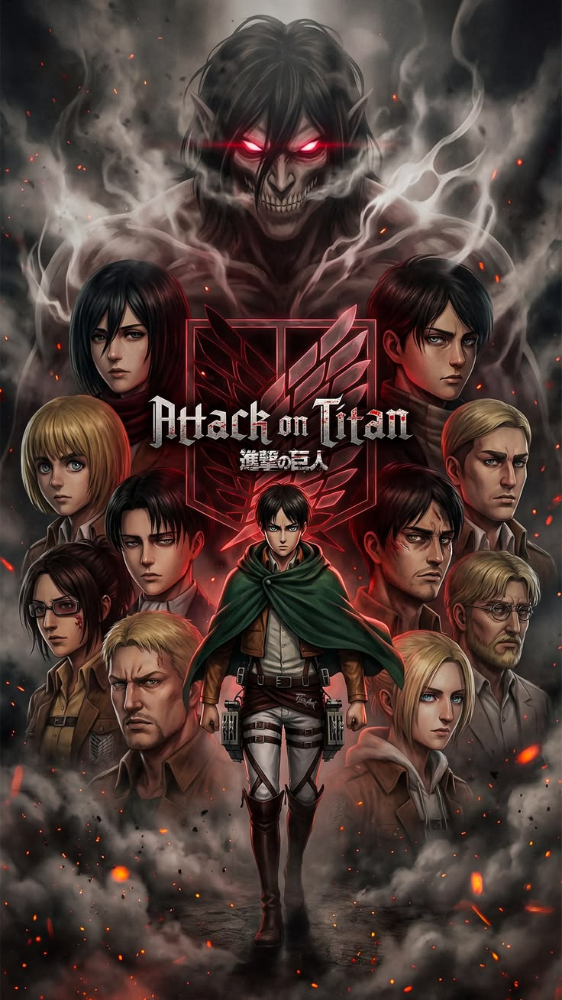

Top 1
5.0/5
312 comentarios
Attack on Titan
Genero: Accion / Drama oscuro
Una historia intensa de supervivencia, secretos y guerra que escala con giros enormes. Ideal para quienes buscan tension, estrategia y personajes llevados al limite.